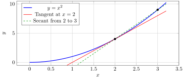
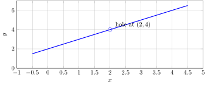
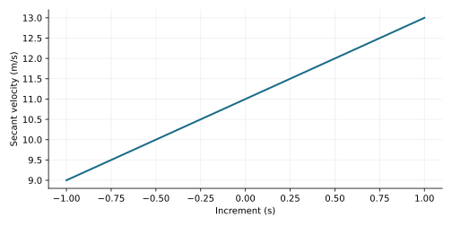

Rates of Change, Difference Quotients, and Limits
Opening context: from patterns to instantaneous change
Earlier chapters developed functions, graphical models, and algebraic reasoning. This chapter asks a new question: how quickly does a quantity change at a particular instant? Average change is easy to calculate from two measurements; instantaneous change requires a limiting argument. This bridge from precalculus to calculus is especially useful for analyzing motion, medication concentrations, and laboratory sensor readings. All applied data in this chapter are illustrative unless otherwise stated.
Learning outcomes
Students will compute and interpret average rates; construct and simplify difference quotients; estimate tangent slopes numerically and graphically; evaluate elementary limits by substitution, factoring, and rationalization; distinguish one-sided and two-sided limits; classify discontinuities; and explain how measurement noise affects numerical estimates.
How to use the computational laboratories
Predict analytically before executing code. Each laboratory presents R first, then Python, in separate full-width listings. R and Python use different indexing conventions, but both use radians for trigonometric calculations. Record mathematical conclusions in complete sentences with units where appropriate.
Why rates of change matter
A quantity can change even when its current value is known precisely. A concentration of \(8\) mg/L does not tell us whether the concentration is rising or falling. Rates compare a change in an output with a change in an input. For a function \(f\), the average rate of change on \([a,b]\) is \([f(b)-f(a)]/(b-a)\), provided \(a\ne b\). Units are output units per input unit. A negative rate describes a decrease, not an invalid measurement.
Worked example. A temperature increases from \(18^\circ\)C at 8:00 to \(24^\circ\)C at 11:00. Its average rate is \((24-18)/(11-8)=2^\circ\)C per hour. This does not imply the temperature rose at exactly that rate every minute.
Guided practice. A laboratory concentration drops from \(15\) to \(9\) mg/L over 4 hours. Find the average rate and interpret its sign.
Secant lines and average rates
On the graph \(y=f(x)\), the average rate of change over \([a,b]\) equals the slope of the secant line through \((a,f(a))\) and \((b,f(b))\). The secant equation is \(y-f(a)=m_{a,b}(x-a)\). A secant slope depends on two input values; it is not generally the slope at one point. Moving \(b\) toward \(a\) creates a sequence of secant lines that may approach a tangent.
Worked example. For \(f(x)=x^2\), the secant from \(x=1\) to \(x=3\) has slope \((9-1)/(3-1)=4\) and equation \(y-1=4(x-1)\).
Guided practice. For \(f(x)=x^2-2x\), find the secant slope on \([0,3]\) and write the secant equation.
Visual investigation.
Sketch the relevant function on graph paper or using technology. Mark the inputs and output values from the worked example. Predict the behavior before calculating it; compare estimates from the left and right where meaningful. Reflection: Which features are established by algebra, and which are only suggested by the graph?
The difference quotient
The expression \([f(a+h)-f(a)]/h\) is the difference quotient at \(a\) with increment \(h\ne0\). It measures an average rate over an interval of width \(h\). The algebraic form matters: simplifying first often reveals what happens as \(h\) becomes small. The condition \(h\ne0\) must be maintained during cancellation.
Worked example. For \(f(x)=x^2+3x\), \(f(a+h)-f(a)=2ah+h^2+3h\), so the difference quotient is \(2a+h+3\) for \(h\ne0\).
Guided practice. Compute and simplify the difference quotient for \(f(x)=2x^2-5x+1\). State the restriction on \(h\).
Visual investigation.
Sketch the relevant function on graph paper or using technology. Mark the inputs and output values from the worked example. Predict the behavior before calculating it; compare estimates from the left and right where meaningful. Reflection: Which features are established by algebra, and which are only suggested by the graph?
Difference quotients for rational functions
Rational functions require attention to domain restrictions before and after simplification. When \(f(x)=1/x\), \([f(a+h)-f(a)]/h=-1/[a(a+h)]\) as long as \(h\ne0\), \(a\ne0\), and \(a+h\ne0\). A canceled factor does not restore a previously excluded input. This distinction prepares students to understand removable discontinuities.
Worked example. At \(a=2\), the difference quotient for \(f(x)=1/x\) becomes \(-1/[2(2+h)]\), which approaches \(-1/4\) as \(h\) approaches zero.
Guided practice. For \(f(x)=3/x\), simplify the difference quotient at \(a=1\) and list every excluded value of \(h\).
Numerical estimates of instantaneous change
A table of difference quotients for smaller positive and negative \(h\) can suggest a limiting rate. Compare both sides: numerical agreement is evidence, not a proof. Floating-point arithmetic can lose accuracy when \(h\) is extremely small because subtraction of nearly equal values introduces cancellation error. Use moderate decreasing increments and algebra whenever possible.
Worked example. For \(f(x)=x^2\) at \(a=2\), the difference quotient equals \(4+h\). Values at \(h=0.1,0.01,-0.01,-0.1\) are \(4.1,4.01,3.99,3.9\), suggesting a rate of \(4\).
Guided practice. Construct a table for \(f(x)=x^2+1\) at \(a=3\) with \(h=\pm0.1,\pm0.01\). Predict the limiting slope.
Visual investigation.
Sketch the relevant function on graph paper or using technology. Mark the inputs and output values from the worked example. Predict the behavior before calculating it; compare estimates from the left and right where meaningful. Reflection: Which features are established by algebra, and which are only suggested by the graph?
Tangent lines as limiting secants
A tangent line represents the local linear direction of a smooth curve. If secant slopes approach a finite value \(m\) as \(h\to0\), the tangent line at \(x=a\) is \(y-f(a)=m(x-a)\). A tangent need not touch a graph at only one point. Some graphs have corners, cusps, vertical tangents, or discontinuities, where a finite tangent slope may fail to exist.
Worked example. For \(f(x)=x^2\) at \(a=2\), the limiting slope is \(4\). The tangent is \(y-4=4(x-2)\), or \(y=4x-4\).
Guided practice. Find the tangent line to \(f(x)=x^2+3x\) at \(x=1\) by simplifying the difference quotient.
Visual investigation.
Sketch the relevant function on graph paper or using technology. Mark the inputs and output values from the worked example. Predict the behavior before calculating it; compare estimates from the left and right where meaningful. Reflection: Which features are established by algebra, and which are only suggested by the graph?
The intuitive idea of a limit
The notation \(\lim_{x\to a}f(x)=L\) says that values of \(f(x)\) can be made arbitrarily close to \(L\) by choosing \(x\) sufficiently close to \(a\) but different from \(a\). The value \(f(a)\) may differ from \(L\) or may not be defined. A limit is about behavior near a point, not necessarily at the point. A table and graph can motivate a conjecture; algebra can establish it in familiar cases.
Worked example. For \(f(x)=(x^2-4)/(x-2)\) with \(x\ne2\), factoring gives \(f(x)=x+2\). Thus the limit as \(x\to2\) is \(4\) even though the original expression is undefined at \(2\).
Guided practice. Evaluate \(\lim_{x\to3}(x^2-9)/(x-3)\) and explain why direct substitution into the original fraction fails.
Visual investigation.
Sketch the relevant function on graph paper or using technology. Mark the inputs and output values from the worked example. Predict the behavior before calculating it; compare estimates from the left and right where meaningful. Reflection: Which features are established by algebra, and which are only suggested by the graph?
One-sided limits
A left-hand limit \(\lim_{x\to a^-}f(x)\) approaches \(a\) through smaller inputs; a right-hand limit \(\lim_{x\to a^+}f(x)\) approaches through larger inputs. A finite two-sided limit exists exactly when both one-sided limits exist and are equal. This is essential for piecewise models with changes in rules at a threshold.
Worked example. Let \(f(x)=x+1\) for \(x<2\) and \(f(x)=5-x\) for \(x\ge2\). Both one-sided limits at \(2\) equal \(3\), so the two-sided limit is \(3\).
Guided practice. For \(g(x)=x^2\) if \(x<1\) and \(g(x)=x+2\) if \(x\ge1\), find both one-sided limits at \(1\).
Visual investigation.
Sketch the relevant function on graph paper or using technology. Mark the inputs and output values from the worked example. Predict the behavior before calculating it; compare estimates from the left and right where meaningful. Reflection: Which features are established by algebra, and which are only suggested by the graph?
Limit laws and direct substitution
For functions with finite limits, sums, differences, products, and quotients (with nonzero denominator limit) preserve limits. Polynomials are continuous everywhere, so their limits can be found by direct substitution. Rational functions are continuous wherever their denominators are nonzero. These facts justify many quick evaluations, but they do not justify dividing by zero.
Worked example. \(\lim_{x\to2}(3x^2-x+1)=3(4)-2+1=11\). For \(\lim_{x\to2}(x+1)/(x-4)\), the denominator is nonzero, giving \(-3/2\).
Guided practice. Evaluate \(\lim_{x\to-1}(2x^3+5x)\) and \(\lim_{x\to1}(x^2+2)/(x+3)\).
Indeterminate forms and factoring
A quotient that yields \(0/0\) under substitution is indeterminate: it does not tell us the limit. Factoring, rationalizing, or rewriting may reveal a simpler expression for nearby inputs. Never treat \(0/0\) as a numerical answer. Each simplification should preserve equality on a punctured neighborhood of the target point.
Worked example. \(\lim_{x\to3}(x^2-9)/(x-3)=\lim_{x\to3}(x+3)=6\) after factoring and canceling for \(x\ne3\).
Guided practice. Evaluate \(\lim_{x\to-2}(x^2+5x+6)/(x+2)\) by factoring. State why the cancellation is valid for the limit.
Visual investigation.
Sketch the relevant function on graph paper or using technology. Mark the inputs and output values from the worked example. Predict the behavior before calculating it; compare estimates from the left and right where meaningful. Reflection: Which features are established by algebra, and which are only suggested by the graph?
Rationalization and radical limits
When radicals produce a \(0/0\) expression, multiply numerator and denominator by the conjugate. The identity \((A-B)(A+B)=A^2-B^2\) often removes the troublesome radical difference. The resulting expression is equivalent only where the original is defined, which is sufficient for evaluating a nearby limit.
Worked example. For \(x\ne0\), \((\sqrt{4+x}-2)/x=1/(\sqrt{4+x}+2)\). Therefore the limit as \(x\to0\) is \(1/4\).
Guided practice. Evaluate \(\lim_{h\to0}(\sqrt{9+h}-3)/h\) using a conjugate.
Visual investigation.
Sketch the relevant function on graph paper or using technology. Mark the inputs and output values from the worked example. Predict the behavior before calculating it; compare estimates from the left and right where meaningful. Reflection: Which features are established by algebra, and which are only suggested by the graph?
Infinite behavior and asymptotes
An infinite limit describes unbounded growth or decrease near an input; it is not a finite limit. For example, \(1/(x-2)\) tends to \(-\infty\) from the left and \(+\infty\) from the right. A vertical asymptote may occur at \(x=2\). Horizontal asymptotes concern behavior as \(x\to\pm\infty\). These are different questions and should not be conflated.
Worked example. For \(f(x)=2+1/x\), the function approaches \(2\) as \(x\to\infty\), so \(y=2\) is a horizontal asymptote; \(x=0\) is a vertical asymptote.
Guided practice. Describe the one-sided behavior of \(1/(x+3)\) near \(x=-3\) and its behavior as \(x\to\infty\).
Visual investigation.
Sketch the relevant function on graph paper or using technology. Mark the inputs and output values from the worked example. Predict the behavior before calculating it; compare estimates from the left and right where meaningful. Reflection: Which features are established by algebra, and which are only suggested by the graph?
Continuity at a point
A function is continuous at \(a\) if (1) \(f(a)\) is defined, (2) \(\lim_{x\to a}f(x)\) exists, and (3) the limit equals \(f(a)\). Discontinuities include removable holes, jumps, and infinite behavior. A physical model may be continuous over a time range even if a piecewise formula changes there; matching one-sided values is the key.
Worked example. Define \(f(x)=(x^2-1)/(x-1)\) for \(x\ne1\) and \(f(1)=2\). Then \(f\) is continuous at \(1\), because the nearby expression is \(x+1\) and its limit is \(2\).
Guided practice. Choose \(c\) so \(f(x)=2x+1\) for \(x<2\) and \(f(x)=x+c\) for \(x\ge2\) is continuous at \(2\).
Visual investigation.
Sketch the relevant function on graph paper or using technology. Mark the inputs and output values from the worked example. Predict the behavior before calculating it; compare estimates from the left and right where meaningful. Reflection: Which features are established by algebra, and which are only suggested by the graph?
Absolute value and corners
The absolute-value function \(f(x)=|x|\) is continuous at zero but has different left and right secant slopes there. For \(h>0\), \(|h|/h=1\); for \(h<0\), it equals \(-1\). Thus a single finite limiting slope does not exist. Continuity alone is not sufficient for differentiability.
Worked example. For \(f(x)=|x-3|\), the graph has a corner at \(x=3\). The left slope is \(-1\) and the right slope is \(1\).
Guided practice. Use the difference quotient to decide whether \(f(x)=|x+2|\) has a tangent slope at \(x=-2\).
Visual investigation.
Sketch the relevant function on graph paper or using technology. Mark the inputs and output values from the worked example. Predict the behavior before calculating it; compare estimates from the left and right where meaningful. Reflection: Which features are established by algebra, and which are only suggested by the graph?
Piecewise models and threshold decisions
Piecewise functions can represent different regimes, such as a baseline response below a threshold and a new response above it. Check one-sided limits, the assigned function value, and units. A discontinuity may be intentional (an instantaneous policy change) or a modeling defect (an implausible jump in a physiological quantity). Mathematical conclusions depend on the assumptions of the model.
Worked example. A device reports \(S(t)=2t+1\) for \(t<4\) and \(S(t)=t+5\) for \(t\ge4\). Both rules approach \(9\) at \(t=4\), so the model is continuous there.
Guided practice. Replace the second rule by \(S(t)=t+c\) and find \(c\) that preserves continuity at \(t=4\).
Average versus instantaneous velocity
For a position model \(s(t)\), average velocity over \([t,t+h]\) is \([s(t+h)-s(t)]/h\). Its limiting value, when it exists, is instantaneous velocity. Velocity is signed; speed is its magnitude in one-dimensional motion. Units must be carried through the calculation. A position model need not be physically valid for all times.
Worked example. For \(s(t)=5t^2\) meters, the average velocity from \(t=2\) to \(t=2+h\) is \(20+5h\) m/s. As \(h\to0\), instantaneous velocity is \(20\) m/s.
Guided practice. For \(s(t)=3t^2+2t\) meters, find average velocity on \([1,1+h]\) and estimate instantaneous velocity at \(t=1\).
Visual investigation.
Sketch the relevant function on graph paper or using technology. Mark the inputs and output values from the worked example. Predict the behavior before calculating it; compare estimates from the left and right where meaningful. Reflection: Which features are established by algebra, and which are only suggested by the graph?
Measurement noise and numerical differentiation
Real measurements are noisy. When a difference quotient divides a small difference by a small time interval, noise can be amplified. For observations \(y_i=f(t_i)+\epsilon_i\), a forward-difference estimate \([y_{i+1}-y_i]/\Delta t\) contains noise difference \((\epsilon_{i+1}-\epsilon_i)/\Delta t\). Therefore smaller spacing does not always yield a better empirical estimate. Compare trends across several scales and report uncertainty.
Worked example. If two readings each have errors as large as \(0.02\) units and the time gap is \(0.01\) s, the difference quotient can have error as large as \(0.04/0.01=4\) units/s.
Guided practice. If readings have errors at most \(0.01\) mg/L and the time gap is \(0.1\) h, bound the possible error in the forward-difference estimate.
Visual investigation.
Sketch the relevant function on graph paper or using technology. Mark the inputs and output values from the worked example. Predict the behavior before calculating it; compare estimates from the left and right where meaningful. Reflection: Which features are established by algebra, and which are only suggested by the graph?
Limits and model interpretation
The mathematical limit of a model need not correspond to an attainable physical measurement. For instance, a concentration model may approach zero without ever equaling zero. Distinguish an algebraic limit from an empirical claim. Always state the model’s domain, assumptions, units, and whether the question concerns a local limit or a long-term prediction.
Worked example. For \(C(t)=12e^{-0.3t}\) mg/L with \(t\ge0\), \(C(t)\) approaches \(0\) as \(t\to\infty\), but the formula is strictly positive for every finite \(t\).
Guided practice. For \(P(t)=100/(1+4e^{-0.2t})\), predict the long-run level and explain its meaning in context.
Visual investigation.
Sketch the relevant function on graph paper or using technology. Mark the inputs and output values from the worked example. Predict the behavior before calculating it; compare estimates from the left and right where meaningful. Reflection: Which features are established by algebra, and which are only suggested by the graph?
A preview of the derivative
The derivative at \(a\) is defined, when the finite limit exists, by \(f'(a)=\lim_{h\to0}[f(a+h)-f(a)]/h\). In this chapter the emphasis is on constructing and understanding that limit, not memorizing differentiation rules. Later calculus chapters develop systematic methods for evaluating derivatives and using them to optimize models and analyze change.
Worked example. For \(f(x)=x^2\), algebra gives \([f(a+h)-f(a)]/h=2a+h\). The limiting value is \(2a\), which is the slope of the tangent at \(x=a\).
Guided practice. Use the limit definition to find the derivative of \(f(x)=4x+7\) at an arbitrary input \(a\).
Visual gallery: secants, tangents, and removable discontinuities


Computational laboratory A: secant slopes and tangent estimates
Prediction. For \(f(x)=x^2+3x\) at \(a=2\), simplify the difference quotient before running the code. What value should the slopes approach?
R code
# Laboratory A: secant slopes and tangent estimates
f <- function(x) x^2 + 3*x
a <- 2
h <- c(1, .5, .1, .01, -.01, -.1, -.5)
result <- data.frame(h=h, secant=(f(a+h)-f(a))/h, exact=2*a+h+3)
print(result)
x <- seq(-1,4,length.out=300)
plot(x,f(x),type="l",lwd=2,xlab="x",ylab="f(x)",main="Secant to tangent")
lines(x,f(a)+7*(x-a),col="red",lwd=2)
points(a,f(a),pch=19)
legend("topleft",c("f(x)","tangent"),col=c("black","red"),lty=1,bty="n")Python code
import numpy as np
import matplotlib.pyplot as plt
from pathlib import Path
Path("figures").mkdir(exist_ok=True)
a = 2.0
f = lambda x: x*x + 3*x
h = np.array([1, .5, .1, .01, -.01, -.1, -.5])
print("h, secant slope, exact simplified slope")
for step in h:
print(f"{step:8.3f} {(f(a+step)-f(a))/step:12.6f} {2*a+step+3:12.6f}")
x = np.linspace(-1, 4, 300)
plt.plot(x, f(x), label="f(x)=x^2+3x")
plt.plot(x, f(a)+7*(x-a), label="tangent estimate at a=2")
plt.scatter([a],[f(a)])
plt.xlabel("x");plt.ylabel("f(x)");plt.legend();plt.tight_layout()
plt.savefig("figures/labA_python.png", dpi=180)
plt.close()Interpretation. Explain why very tiny \(h\) can produce unreliable floating-point results. Compare the output with the exact formula.
Computational laboratory B: one-sided limits and continuity
Prediction. For the piecewise function \(g(x)=x+1\) when \(x<2\) and \(g(x)=5-x\) when \(x\ge2\), find both one-sided limits at \(2\).
R code
# Laboratory B: one-sided limits and continuity
g <- function(x) ifelse(x<2,x+1,5-x)
for (h in c(.1,.01,.001)) {
cat("h:",h,"left:",g(2-h),"right:",g(2+h),"\n")
}
x <- seq(0,4,length.out=401)
plot(x,g(x),type="l",lwd=2,xlab="x",ylab="g(x)",main="Piecewise continuity")
points(2,3,pch=19)Python code
import numpy as np
import matplotlib.pyplot as plt
from pathlib import Path
Path("figures").mkdir(exist_ok=True)
def g(x):
return np.where(x < 2, x+1, 5-x)
for h in [.1,.01,.001]:
print(f"h={h:g}, left={g(2-h):.6f}, right={g(2+h):.6f}")
x = np.linspace(0,4,401)
plt.plot(x,g(x),label="continuous piecewise model")
plt.scatter([2],[3]);plt.xlabel("x");plt.ylabel("g(x)")
plt.legend();plt.tight_layout();plt.savefig("figures/labB_python.png",dpi=180)
plt.close()Interpretation. Modify the second branch to \(6-x\) and describe what changes at the join.
Computational laboratory C: noisy measurement rates
Prediction. Consider a simulated concentration \(C(t)=10e^{-0.25t}\) mg/L. Will a shorter measurement interval always improve a rate estimate when readings are noisy?
R code
# Laboratory C: noisy concentration measurements
set.seed(15)
Cfun <- function(t) 10*exp(-.25*t)
t <- seq(0,8,by=.1)
y <- Cfun(t)+rnorm(length(t),mean=0,sd=.04)
dt <- diff(t)
rate <- diff(y)/dt
truth <- -.25*Cfun(t[-length(t)])
print(head(data.frame(t=t[-length(t)],observed=rate,model=truth),12))
plot(t[-length(t)],rate,type="l",xlab="time (hours)",ylab="rate (mg/L/hour)",main="Noisy rates")
lines(t[-length(t)],truth,col="red",lwd=2)
legend("bottomright",c("noisy forward differences","model rate"),col=c("black","red"),lty=1,bty="n")Python code
import numpy as np
import matplotlib.pyplot as plt
from pathlib import Path
Path("figures").mkdir(exist_ok=True)
rng = np.random.default_rng(15)
def C(t): return 10*np.exp(-.25*t)
t = np.linspace(0,8,81)
noise = rng.normal(0,.04,len(t))
y = C(t)+noise
dt = t[1]-t[0]
rate = np.diff(y)/dt
truth = -.25*C(t[:-1])
print("time, observed forward rate, model instantaneous rate")
for i in range(0,len(rate),10): print(round(t[i],2),round(rate[i],4),round(truth[i],4))
plt.plot(t[:-1],rate,label="noisy forward differences")
plt.plot(t[:-1],truth,label="model instantaneous rate")
plt.xlabel("time (hours)");plt.ylabel("rate (mg/L/hour)")
plt.legend();plt.tight_layout();plt.savefig("figures/labC_python.png",dpi=180)
plt.close()Interpretation. Compare the noiseless theoretical slope with forward differences computed from noisy measurements. Discuss units and sensitivity.
Extended applied workshops with worked solutions
Workshop 1: Medication concentration
Problem. A simulated concentration follows \(C(t)=20/(1+t)\) mg/L, with \(t\) in hours. (a) Find the average change from \(t=1\) to \(t=3\). (b) Simplify \([C(2+h)-C(2)]/h\). (c) Find its limit as \(h\to0\). (d) Interpret the sign and units.
Worked solution. (a) \((5-10)/2=-2.5\) mg/L/h. (b) \(-20/[(3+h)3]\) for \(h\ne0\) and \(h\ne-3\). (c) \(-20/9\) mg/L/h. (d) The model predicts decreasing concentration near hour 2.
Workshop 2: Sensor calibration
Problem. A sensor output is modeled by \(S(x)=(x^2-16)/(x-4)\) for \(x\ne4\). (a) Simplify for permitted inputs. (b) Find the limit as \(x\to4\). (c) What value would fill the hole continuously? (d) Explain why this does not prove a real sensor operates at \(x=4\).
Worked solution. For \(x\ne4\), \(S(x)=x+4\). The limit is 8. Defining \(S(4)=8\) makes the model continuous, but the physical operating range must be validated independently.
Workshop 3: Piecewise monitoring threshold
Problem. A monitoring score uses \(M(t)=2t+3\) for \(t<5\) and \(M(t)=t+c\) for \(t\ge5\). (a) Find \(c\) for continuity. (b) Find the average rate over \([4,6]\) with that value. (c) Explain whether a continuous model must have a single tangent slope at \(5\).
Worked solution. Left limit \(13\), right value \(5+c\), so \(c=8\). Then \(M(4)=11\) and \(M(6)=14\), giving \(1.5\) score units per time unit. The left and right slopes are 2 and 1, so the join is a corner.
Workshop 4: Quadratic motion
Problem. A simplified position is \(s(t)=4t^2-3t\) meters. (a) Compute average velocity on \([2,2+h]\). (b) Find the limiting velocity. (c) Write the tangent line to the position graph at \(t=2\). (d) Explain why this does not imply constant velocity.
Worked solution. \([s(2+h)-s(2)]/h=13+4h\), so the limit is \(13\) m/s. Since \(s(2)=10\), the tangent is \(s=10+13(t-2)\). The quadratic model has changing slope.
Workshop 5: Measurement resolution
Problem. Two noisy readings each differ from the true reading by at most \(0.015\) units. (a) Bound the worst-case error in a forward-difference rate with \(\Delta t=0.1\) s. (b) Repeat with \(\Delta t=0.01\) s. (c) Explain the tradeoff between local approximation and noise amplification.
Worked solution. Worst-case difference error is \(0.03\) units, yielding rate errors at most \(0.3\) units/s and \(3\) units/s respectively. Smaller spacing improves local approximation for smooth functions but magnifies measurement error.
Guided problem-solving studio: four methods for estimating a rate
Consider \(f(x)=x^2-2x+4\) at \(a=3\). We will obtain the same local slope using four complementary representations.
Method 1: a table of nearby values
Evaluate \(f(3)=7\). For \(h=0.5,0.1,0.01,-0.01,-0.1,-0.5\), compute \([f(3+h)-7]/h\). The results are \(4.5,4.1,4.01,3.99,3.9,3.5\). Notice that the forward and backward estimates bracket \(4\).
Method 2: exact algebra
Expand \(f(3+h)=(3+h)^2-2(3+h)+4=7+4h+h^2\). Consequently, for \(h\ne0\), \[\frac{f(3+h)-f(3)}{h}=\frac{4h+h^2}{h}=4+h.\] The expression approaches \(4\) as \(h\to0\). This algebraic result explains the numerical table rather than merely agreeing with it.
Method 3: a graphical secant
Plot \((3,7)\) and \((3+h,f(3+h))\) for \(h=1\) and \(h=-1\). The two secants have slopes \(5\) and \(3\). As the second point moves toward the first, the secant lines approach the line \(y-7=4(x-3)\). Sketch this limiting line and check that it passes through \((3,7)\).
Method 4: interpretation
If \(x\) measures hours and \(f(x)\) measures a simulated response in arbitrary units, the instantaneous rate is \(4\) response units per hour at hour 3. This local rate is not the same as a long-run average. Guided extension: Repeat all four methods for \(g(x)=2x^2+x\) at \(a=1\). Compare which representation is most useful for explanation, estimation, and exact verification.
Visual investigation: a limit can exist without a function value
Consider the rule \[q(x)=\frac{x^2-1}{x-1},\qquad x\ne1.\]
Construct a table at \(x=0.9,0.99,0.999,1.001,1.01,1.1\).
Simplify the expression for \(x\ne1\). Explain why \(q(1)\) is not defined even though the simplified expression \(x+1\) has a value at \(1\).
Sketch the line \(y=x+1\) with an open circle at \((1,2)\).
Define a new function \(Q\) by assigning \(Q(1)=2\) and keeping \(Q(x)=q(x)\) elsewhere. Is \(Q\) continuous at \(1\)?
Instead assign \(Q(1)=5\). What happens to the limit? What happens to continuity?
Takeaway. A limit describes nearby behavior and is unchanged by altering the value at the target input alone. Continuity requires that nearby behavior and the assigned value agree.
Visual investigation: continuity versus smoothness
Three graphs may all pass through the same point but behave differently nearby: a smooth parabola, a V-shaped absolute-value graph, and a step function. Examine \(f(x)=x^2\), \(g(x)=|x|\), and \(h(x)=0\) for \(x<0\) and \(h(x)=1\) for \(x\ge0\).
Find the left and right limits at \(x=0\) for all three functions.
Determine which functions are continuous at \(0\).
Calculate the left and right difference-quotient limits for \(f\) and \(g\) at \(0\).
Explain why a corner can be continuous without having a single tangent slope.
Give an applied scenario where a jump is reasonable and another where a jump would suggest a poor model.
Worked synthesis. For \(f\), both one-sided difference-quotient limits are \(0\). For \(g\), they are \(-1\) and \(1\). For \(h\), the left and right function limits are \(0\) and \(1\), so there is no two-sided limit at zero. These distinctions prepare students for the formal definition of differentiability.
Practice with feedback: identify the mathematical mistake
A student writes \(\lim_{x\to2}(x^2-4)/(x-2)=0/0=0\). Correction: \(0/0\) is indeterminate; factor to obtain a limit of \(4\).
A student cancels \(h\) in a difference quotient and concludes the original quotient is defined at \(h=0\). Correction: the simplified formula agrees only for nonzero \(h\); a limit can still exist.
A student claims a graph approaching \(3\) from the left and \(5\) from the right has limit \(4\). Correction: the one-sided limits differ, so no two-sided limit exists.
A student says a continuous function must have a tangent line at every point. Correction: \(|x|\) is continuous at zero but has a corner.
A student interprets a rate of \(-2\) mg/L/h as a negative concentration. Correction: a negative rate means the concentration is decreasing; it says nothing by itself about the concentration’s sign.
A student computes a noisy difference quotient using a very small time gap and assumes the result is automatically more accurate. Correction: small denominators amplify measurement noise; resolution and uncertainty matter.
Chapter review: conceptual, algebraic, and applied exercises
Instructions. Show reasoning, identify excluded inputs, and report units in applications. For numerical estimates, compare both sides of the target input.
Find the average rate of \(f(x)=3x+7\) on \([1,5]\).
Find the average rate of \(f(x)=x^2\) on \([-2,1]\).
Write the secant line to \(y=x^2+1\) through inputs \(1\) and \(4\).
Simplify the difference quotient for \(f(x)=x^2-4x\).
Simplify the difference quotient for \(f(x)=5x^2+2\).
Simplify the difference quotient for \(f(x)=1/x\) at \(a=3\).
Find the limiting slope of \(f(x)=x^2\) at \(a=-1\).
Find the tangent line to \(f(x)=x^2+2x\) at \(a=1\).
Evaluate \(\lim_{x\to3}(2x^2-x)\).
Evaluate \(\lim_{x\to-1}(x^2+3)/(x-2)\).
Evaluate \(\lim_{x\to2}(x^2-4)/(x-2)\).
Evaluate \(\lim_{x\to-3}(x^2+5x+6)/(x+3)\).
Evaluate \(\lim_{h\to0}(\sqrt{16+h}-4)/h\).
Evaluate \(\lim_{x\to1}(\sqrt{x+3}-2)/(x-1)\).
Explain why \(0/0\) is not a limit value.
Find left and right limits of \(1/(x-1)\) at \(x=1\).
Find the horizontal asymptote of \(f(x)=4+2/x\).
Determine whether \(f(x)=|x|\) has a finite tangent slope at \(0\).
Choose \(c\) for continuity of \(f(x)=x+2\) for \(x<3\), \(f(x)=2x+c\) for \(x\ge3\).
Give an example of a removable discontinuity.
Give an example of a jump discontinuity.
Explain why a graph cannot prove a limit exists.
Explain the distinction between a limit and a function value.
Find the average velocity of \(s(t)=2t^2\) on \([1,4]\).
Estimate the instantaneous velocity of \(s(t)=t^2+5t\) at \(t=2\).
For \(C(t)=8e^{-0.2t}\), find the long-run limit and interpret.
Bound the rate error if two measurements have errors at most \(0.01\) and \(\Delta t=0.02\).
Compare forward and backward secant slopes for \(f(x)=x^2\) at \(a=2\).
Explain why continuity does not guarantee differentiability.
Describe the units of \([f(t+h)-f(t)]/h\) if \(f\) measures mg/L and \(t\) measures hours.
Construct a piecewise function continuous at \(x=1\) with different left and right slopes.
Compute \(\lim_{h\to0}[(a+h)^2-a^2]/h\) for arbitrary \(a\).
Explain why \(h=0\) is excluded from a difference quotient.
For \(f(x)=1/(x+2)\), list its domain and vertical asymptote.
Design a table to estimate \(\lim_{x\to0}(\sin x)/x\) in radians.
Calculus-readiness checkpoint
Explain in words what \(\lim_{h\to0}[f(a+h)-f(a)]/h\) measures.
Compute this limit for \(f(x)=x^2+4x\) at \(a=2\).
Distinguish a secant line, a tangent line, and a vertical asymptote.
Explain how one-sided limits diagnose a jump discontinuity.
Describe why numerical evidence must be checked against algebraic structure.
Extended application: Estimating instantaneous velocity
A cart follows the idealized position law \(s(t)=2t^2+3t\) meters. Estimate its velocity at time 2 using a nonzero time increment. The quantities in this investigation are illustrative rather than measured observations.
Formulating the mathematical model
The proposed relationship is \[Q(h)=11+2h.\] Before calculating, identify the input and output, their units, and the interval on which the model is being studied. Distinguish the mathematical domain from the practical domain. The numerical study uses inputs from \(-1\) to \(1\).
Example 1: Analytical investigation. Derive \(Q(h)\) from the difference quotient for \(h\ne0\). Find the limit and explain the meaning of the missing input.
Worked solution. Expansion gives \([s(2+h)-s(2)]/h=11+2h\). Limit is 11 m/s; the original quotient is undefined at zero.
Connecting numerical and graphical representations
| Increment (s) | Secant velocity (m/s) |
|---|---|
| -1 | 9 |
| -0.5 | 10 |
| 0 | 11 |
| 0.5 | 12 |
| 1 | 13 |

Interpretation. Compare the tabulated values with the graph. Identify the intervals over which the output increases or decreases, and distinguish a sampled extremum from an exact analytical extremum. Explain whether interpolation and extrapolation have the same justification in this setting.
R implementation
The following standalone script defines the model, generates predictions, and draws a labeled graph. Read the formula before running the code. The sampled range is a numerical diagnostic, not a proof of the exact range.
# Applied investigation: Estimating instantaneous velocity
# 1. Define the input domain and model
x <- seq(-1, 1, length.out = 301)
y <- 11+2*x
# 2. Inspect numerical predictions
idx <- unique(round(seq(1, length(x), length.out = 5)))
print(data.frame(input = x[idx], output = y[idx]))
# 3. Visualize the model with labeled axes
plot(x, y, type = "l", lwd = 2, col = "#176B87",
xlab = "Increment (s)", ylab = "Secant velocity (m/s)")
grid()
# 4. Check the sampled output range
print(range(y))Python implementation
Repeat the same investigation using NumPy arrays and Matplotlib. Compare the printed predictions with the R output, allowing for rounding.
# Applied investigation: Estimating instantaneous velocity
import numpy as np
import matplotlib.pyplot as plt
# 1. Define the input domain and model
x = np.linspace(-1, 1, 301)
y = 11+2*x
# 2. Inspect numerical predictions
idx = np.unique(np.linspace(0, len(x)-1, 5).round().astype(int))
print(np.column_stack((x[idx], y[idx])))
# 3. Visualize the model with labeled axes
fig, ax = plt.subplots(figsize=(7, 3.6))
ax.plot(x, y, "-", color="#176B87", linewidth=2)
ax.set(xlabel="Increment (s)", ylabel="Secant velocity (m/s)")
ax.grid(alpha=0.22)
ax.spines[["top", "right"]].set_visible(False)
fig.tight_layout()
plt.show()
# 4. Check the sampled output range
print(np.min(y), np.max(y))Guided practice: checking the model
Calculate the outputs at the two endpoints by hand. Compare them with the numerical table.
Select an interior input not listed in the table. Predict the output before evaluating it in either language.
Explain the meaning of the difference between the two endpoint outputs, including units. If appropriate, calculate the average rate of change.
Identify a physical assumption of the model and describe a circumstance in which it would fail.
Chapter project: investigating Estimating instantaneous velocity
Prepare a short technical report for a reader who has not studied the model. Use the preceding case as a starting point, but develop your own investigation rather than merely reproducing the worked example.
State a quantitative question that can be answered using the model. Define all variables, units, and restrictions.
Modify one meaningful numerical parameter in the formula. Explain what the change represents in the original context. Derive the revised formula and predict the direction of change before computing.
Compare the original and revised models at five common admissible inputs. Present a labeled table and explain the largest difference in the table.
Produce a graph containing both models on the same axes. Use a legend and distinguish the curves with line styles or markers. Explain the shape and any intersections.
Solve your quantitative question algebraically where possible. Verify the result using R and Python; report any differences due to numerical precision.
Discuss at least two limitations. Describe what measurements would be needed to assess the model in practice. Do not present simulated predictions as empirical evidence.
Project deliverables and assessment
Submit a two- to three-page report, the two runnable scripts, and the labeled figure. The report should stand on its own without requiring the reader to inspect the code.
| Criterion | Points |
|---|---|
| Mathematical formulation and domain | 20 |
| Analytical reasoning and verification | 25 |
| Reproducible R and Python computations | 20 |
| Graph and table quality | 15 |
| Interpretation and limitations | 20 |
| Total | 100 |
Chapter summary
The transition to calculus begins with a precise question about change. Secant slopes quantify average change; difference quotients prepare a limiting process; tangent slopes capture local change when the limit exists. Limits describe behavior near an input, and continuity compares that behavior with the assigned function value. Mathematical modeling adds domain, units, uncertainty, and interpretation to these ideas.
Companion scripts
Interactive investigation: Secant approaching a tangent
Enable JavaScript to explore the model.
Explore and explain: Reduce h and compare the secant slope with 2a.